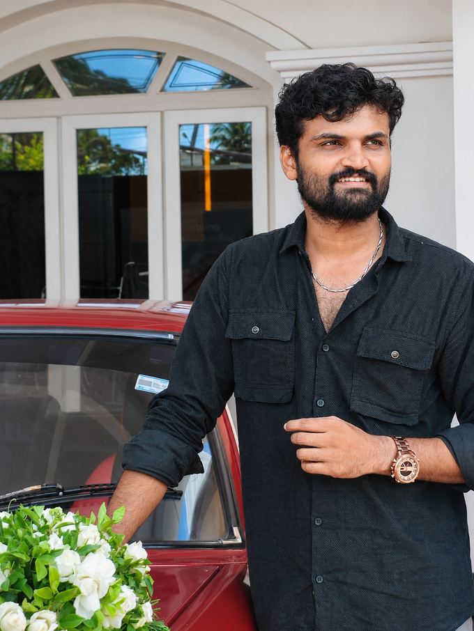

Hello, I'm
IT professional with 2+ years of experience in application support, IT operations and software development, with a track record of solving problems and leading teams.

IT professional with over two years of experience in application support, IT operations, testing and software development.
I've managed incidents from first report to closure, coordinated with cross-functional teams, tested releases and supervised a remote team working across time zones.
I'm known for staying calm under pressure, communicating clearly with stakeholders and finding the root cause instead of the quick fix. I'm looking for a role where I can take on more responsibility and keep growing.
Supporting customers and business applications end to end: triage, reproduce, resolve or escalate, then follow up until closed.
Supervising support shifts: allocating tasks, guiding teammates through escalations and keeping service running across time zones.
Functional and regression testing to validate workflows, report defects clearly and verify fixes before release.
Building and maintaining web applications and business apps, from low-code platforms to full-stack JavaScript.